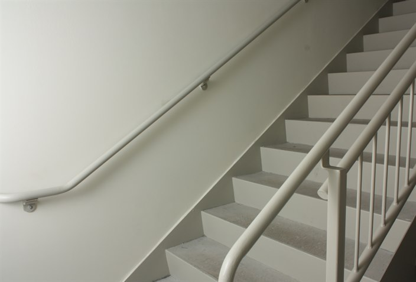
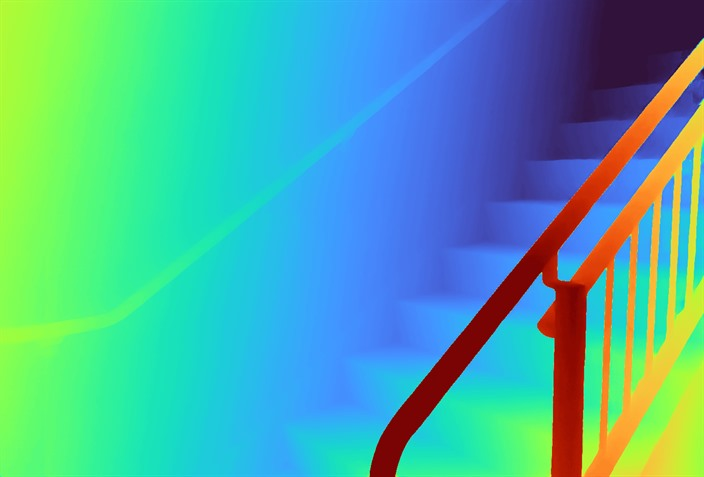
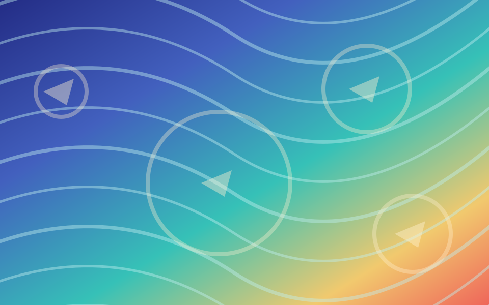
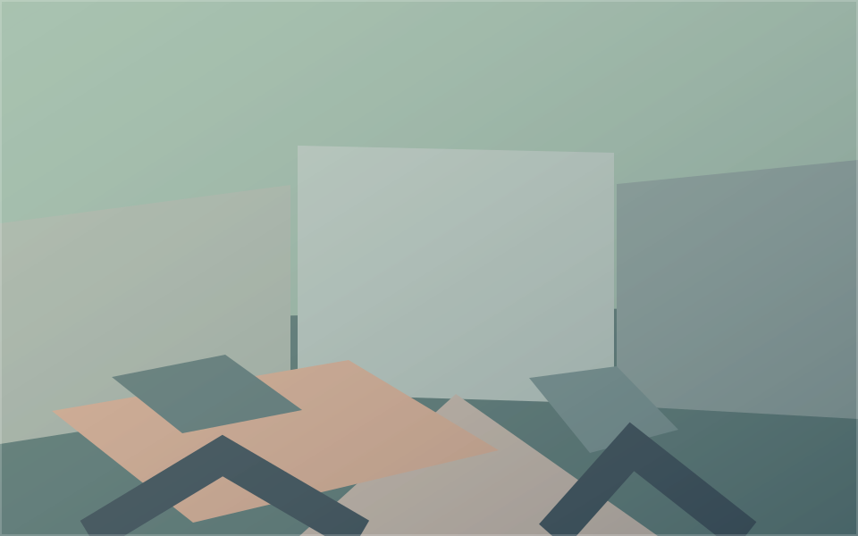

Stereo Matching
Input

Disparity

Built for simple, scalable, general, and accurate correspondence matching.
DINOv3 is a pretrained visual perception model whose representations provide reusable cross-view matching priors. FAST adapts this perception backbone for dense correspondence through zero-parameter attention rewiring, without adding dedicated Transformer matching blocks.
Flow-6M, a unified training corpus of nearly six million image pairs, supports correspondence learning across dynamic scenes and static scenes with different camera viewpoints.




The top two panels show the Ego and Exo input videos, respectively. The bottom two panels show the Ego video reconstructed from Exo and the Exo video reconstructed from Ego using FAST.